Face — v020 to v028 (F1–F8)
Head shape, eye placement and size, eye drawing, mouth and nose, fringe and hair volume, outlines, face shading. Eyes moved from 67.6 to 82.7 mm apart and the tilt dropped from 7.3° to 3.9°; the fringe went from thirteen spikes to five clumps.

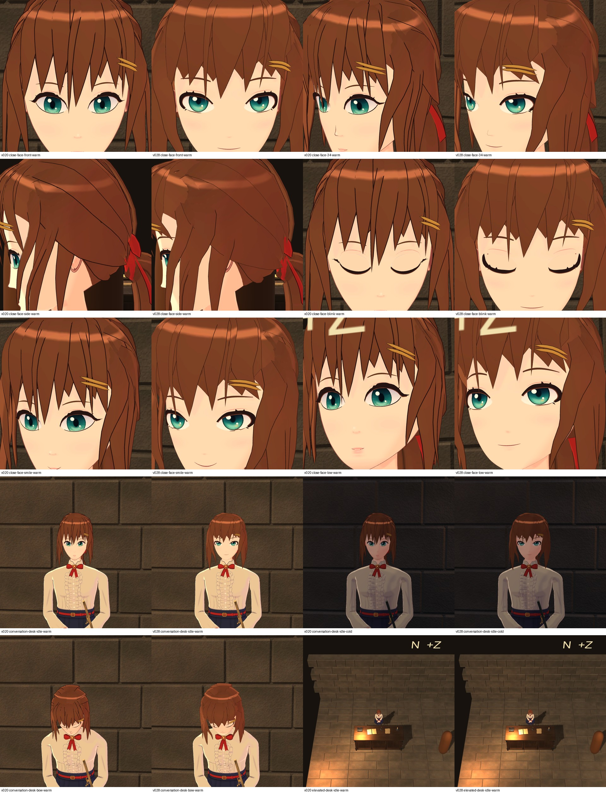


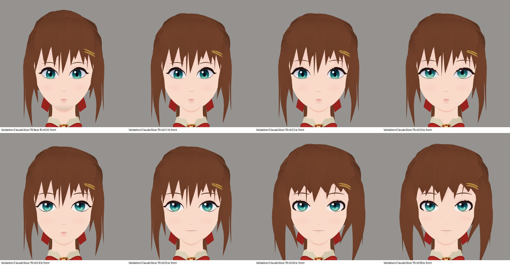

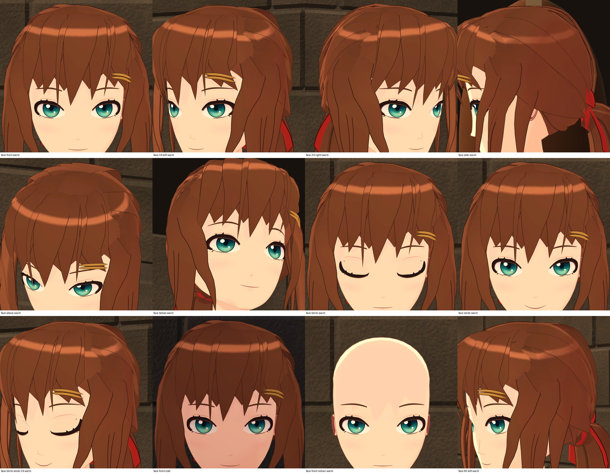
- Still short: the chin is rounder than the references, the fringe covers 83 % of the forehead against a 90 % target, and the smile has no cheek rise.
Hair — v028 to v033 (HR1–HR6)
Broader crown panels, a ponytail of four overlapping locks in place of one tube, a fuller ribbon bow, a stronger root-to-tip gradient, and clearance checked on all 151 frames of both clips.

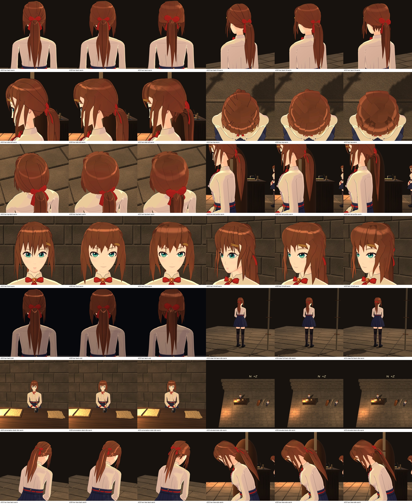

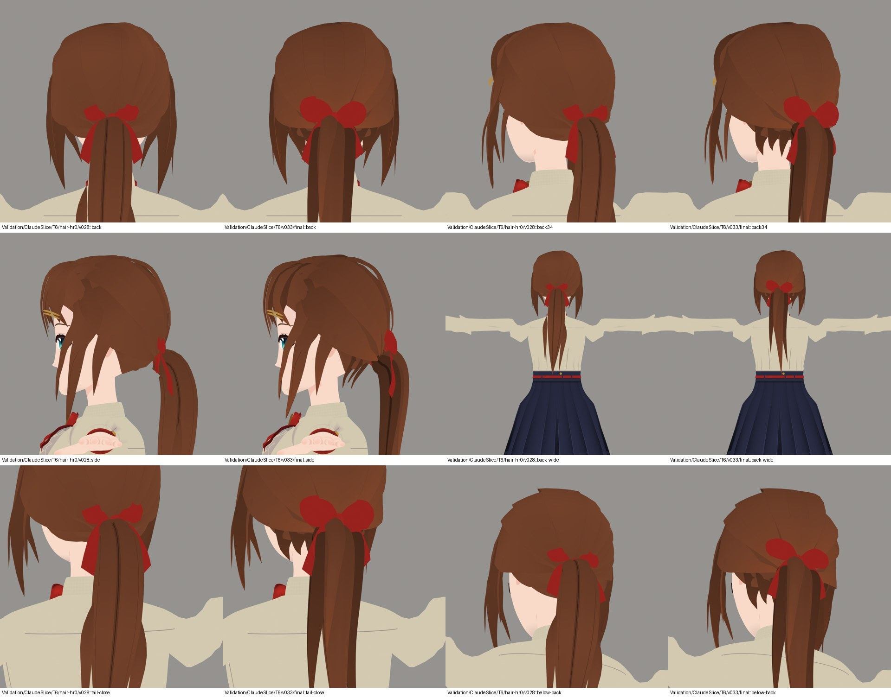

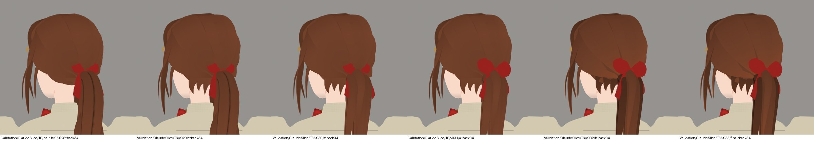

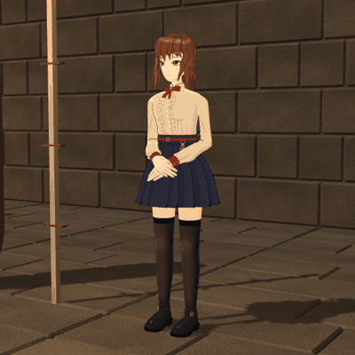


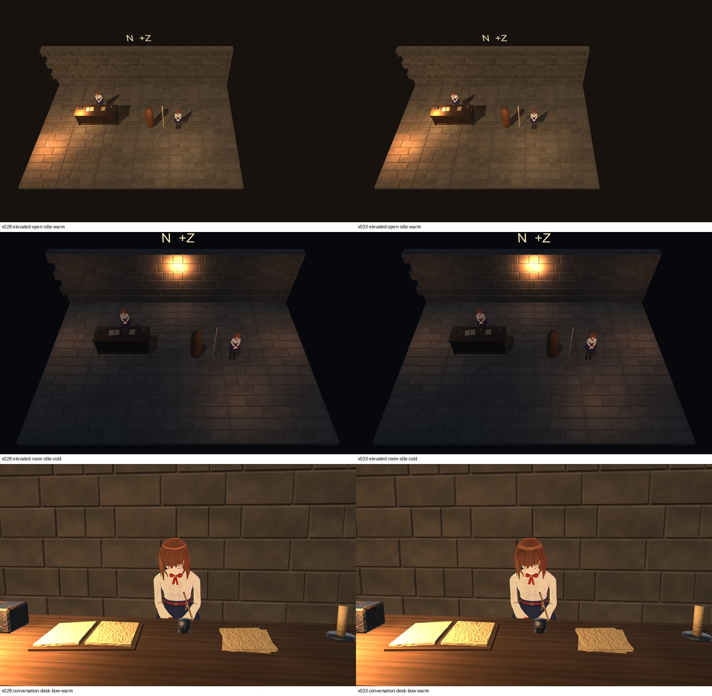
- Still short: the back of the head is still panels with drawn lines, and the tail reads stiff in the bow.
Hands — v033 to v039 (HD1–HD6)
A smaller hand with a narrower palm, longer and slimmer fingers, a longer thumb, a tighter rest fan, short oval nails, and new clasp tables for the bow.

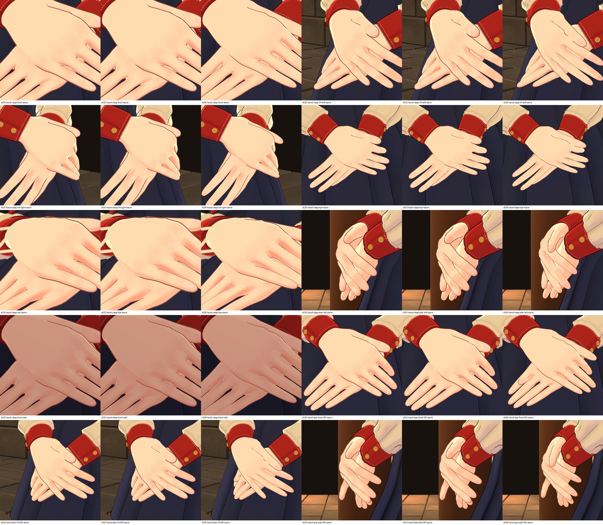

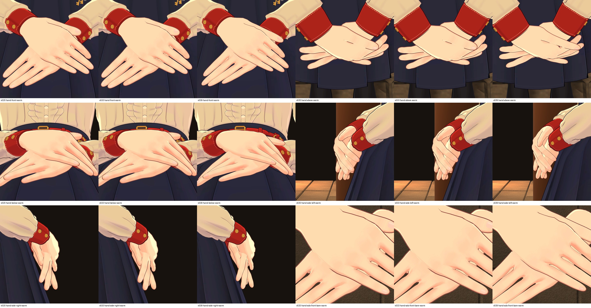

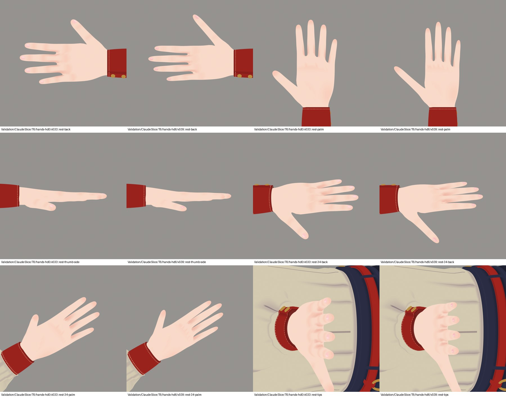

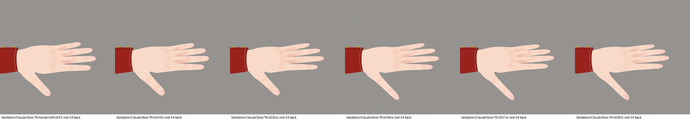
- Still short: palm 65 mm against a 66–68 mm target; the thumb stops about 13 mm short of the finger webs.
Legs — v039 to v045 (LG1–LG6)
Knee drawn in and calf fuller (calf ÷ knee 1.01 to 1.14), a deeper hollow behind the knee, feet 8 mm nearer the centre line and turned out 6°, a narrower foot, a stocking band that presses into the thigh, and a bend check.

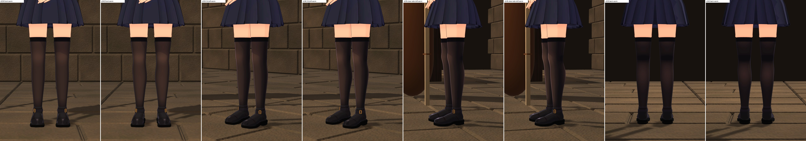

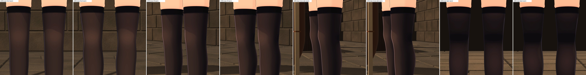

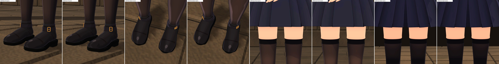

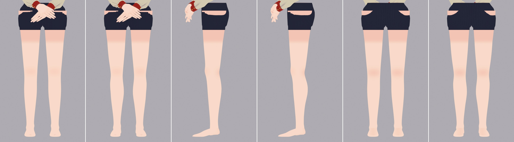

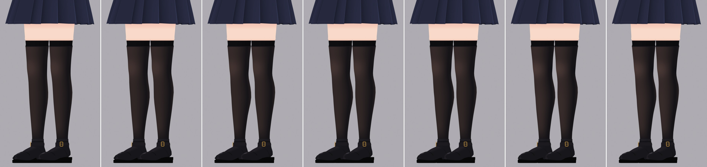
- Still short: the gap between the knees is 80 mm against a 72–76 mm target, and the shoes are still the old heavy ones.